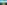
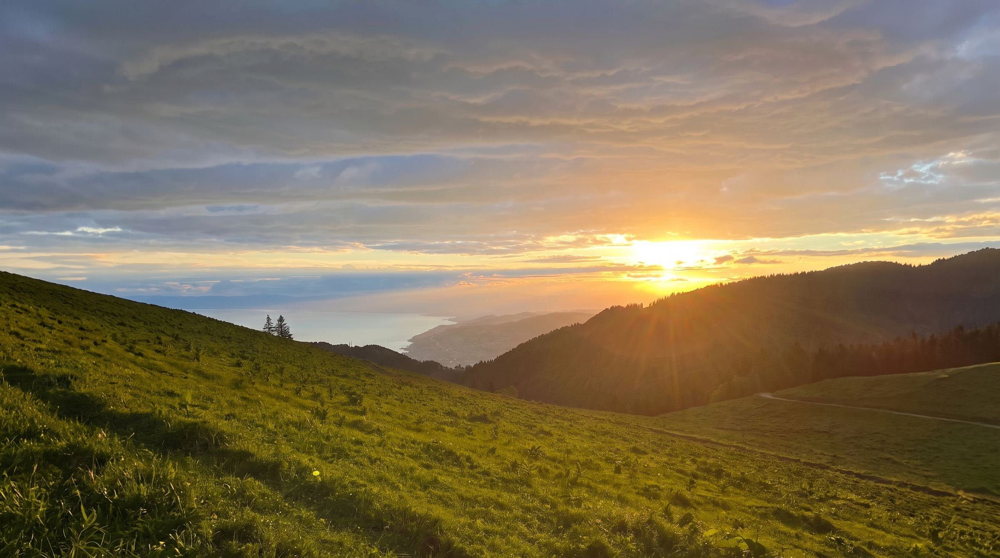
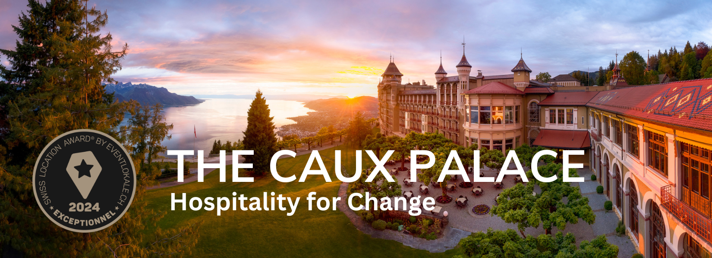
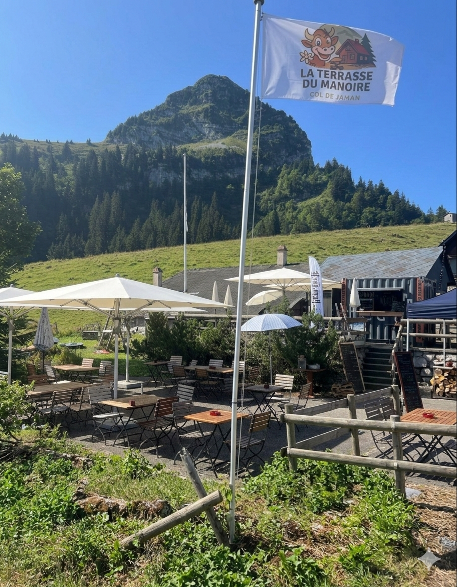

Des points d'accès simples à lire, pensés pour une montée ou une boucle sans prise de tête.

Randonnées autour du Manoïre
Marcher avant de s'asseoir.
Trois itinéraires très lisibles autour du Col de Jaman : une montée courte vers la Dent de Jaman, une traversée plus sportive jusqu'aux Rochers de Naye, et une balade douce du côté des Avants et des narcisses.
Dent de Jaman
Col de Jaman
Rochers de Naye
Les Avants
Les narcisses en mai, les grandes vues l'été et les couleurs franches de l'automne.
La page sert autant au marcheur tranquille qu'au randonneur qui veut se dépasser un peu.
On remonte la faim, puis on redescend au calme avec une table et une vue.
Itinéraires conseillés
Trois randonnées, trois rythmes.
On a structuré la page pour qu'un randonneur voie tout de suite où commencer, combien de temps prévoir et quelle ambiance il va trouver en route.
01 · Montée courte
Dent de Jaman
Le meilleur point d'entrée pour une montée nette et photogénique. Depuis la station de Jaman, le sommet se rejoint en une trentaine de minutes par un sentier court mais raide, avec une vue très ouverte sur le Léman.
Départ : gare de Jaman
Temps : env. 30 min
Profil : court et raide
Vue : 360° sur les Alpes et le lac
Référence utile : la Dent de Jaman est décrite comme un sommet très photogénique avec une vue panoramique sur les Alpes et le Léman.

02 · Traversée panoramique
Col de Jaman → Rochers de Naye
La sortie la plus ambitieuse de la sélection. On part du col, on suit une ligne de crête claire, puis on remonte vers Rochers de Naye. C’est l’itinéraire qui donne la sensation d’être au-dessus du bassin lémanique.
Départ : Col de Jaman
Temps : env. 2 à 3 h
Profil : soutenu
Bonus : option via ferrata pour les plus sportifs
Le secteur est relié à Rochers de Naye par des sentiers de montagne, avec une option plus technique pour les marcheurs aguerris.

03 · Balade de saison
Les Avants et le sentier des Narcisses
Pour une sortie plus douce, on bascule du côté des Avants. C’est le bon terrain pour une marche contemplative, particulièrement en mai quand les narcisses font la réputation du secteur.
Départ : Les Avants
Temps : balade modulable
Meilleure période : mai
Ambiance : forêts, prairies, belvédères
Les Avants sont décrits comme un point de départ de nombreuses randonnées, dont le sentier des Narcisses.
Accès et sécurité
Simple à lire, simple à préparer.
Le but n’est pas de faire une fiche technique froide, mais d’aider un randonneur à décider vite, avec les bons repères.
- Accès possible depuis Montreux par la ligne MOB et les points de départ de Jaman, Caux ou Les Avants.
- Météo changeante en montagne : partir tôt, garder une couche chaude et de l'eau.
- Chaussures avec semelle accrocheuse recommandées sur les tronçons raides et minéraux.
- En cas de doute, choisir le retour le plus simple et profiter du repas au Manoïre.


Retour au Manoïre
La randonnée finit bien quand la table suit.
On veut une page qui donne envie de marcher, mais qui garde le restaurant comme point d’atterrissage naturel : une terrasse, une carte claire, et l’impression d’avoir bien mérité la suite.
Sources et crédits
Tout ce qui doit rester traçable.
Les faits visibles dans la page sont rattachés à des sources publiques, et les visuels utilisés sont archivés localement dans le projet.